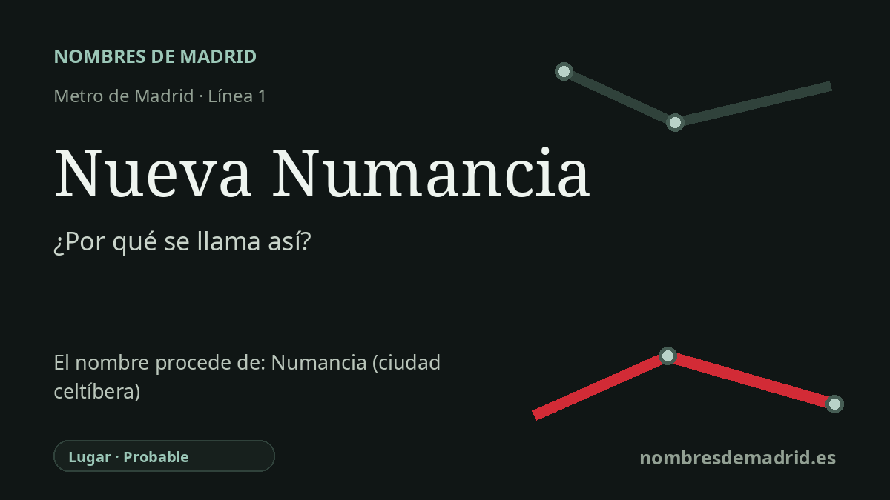

Publicado el · Investigación de Nombres de Madrid · Cómo verificamos cada origen · 9 fuentes consultadas
Respuesta rápida
La estación de Nueva Numancia toma su nombre de una barriada histórica del Puente de Vallecas documentada ya en la década de 1860. El nombre probablemente evocaba la antigua Numancia, ciudad celtíbera recordada como símbolo de resistencia frente a Roma, aunque un artículo local reciente plantea también una posible relación con la fragata Numancia de los años 1860.
La historia del nombre
La estación de Nueva Numancia toma su nombre del antiguo topónimo local Nueva Numancia, en el Puente de Vallecas, no directamente de una persona. La ficha del Consorcio Regional de Transportes sitúa la estación en la línea 1, con accesos en la avenida de la Albufera, y una fotografía del archivo de Metro conservada en memoriademadrid indica que se inauguró el 2 de julio de 1962 como parte de la prolongación de la línea 1 hacia Vallecas.
El nombre de la barriada es casi un siglo anterior al Metro. Un ejemplar digitalizado por la BNE del Diario oficial de avisos de Madrid del 8 de noviembre de 1866 ya menciona a personas que habían residido en el barrio de Nueva Numancia, dentro de la jurisdicción de Vallecas. Las notas históricas locales también señalan obras y nuevas edificaciones en la zona durante la década de 1860, cuando los terrenos baratos de la periferia y las comunicaciones por carretera favorecían el crecimiento más allá del antiguo puente sobre el Abroñigal.
El episodio de 1873 es auténtico, pero no creó el nombre. En el Boletín oficial de la provincia de Madrid del 14 de junio de 1873, Cayetano Agustí y Giner y otros vecinos del caserío situado junto al Puente de Vallecas solicitaron formar un municipio separado con el nombre de Nueva Numancia. La comisión provincial denegó la petición en el Boletín del 15 de septiembre de 1873, indicando que el asentamiento no contaba con los 2.000 habitantes exigidos.
La alusión de fondo probablemente remite a la antigua Numancia, ciudad celtíbera situada junto a la actual Garray, en Soria. La información oficial del Museo Numantino de Castilla y León describe su larga resistencia y su conquista por Escipión en el 133 a. C.; la memoria cultural española convirtió después a Numancia en sinónimo de resistencia heroica, origen de la expresión resistencia numantina. Ese sentido encaja con un intento republicano de independencia municipal, aunque el topónimo ya circulaba antes de aquella solicitud.
Conviene, sin embargo, mantener una cautela. No se ha localizado un decreto o documento fundacional que explique por qué los promotores o vecinos de los años 1860 eligieron exactamente Nueva Numancia. Un artículo reciente de historia local de Vallecas afirma que el origen es desconocido y plantea que el nombre pudo relacionarse con la ciudad antigua o, quizá con más probabilidad, con la fragata Numancia, construida en 1864 y destacada en la escuadra del Pacífico poco antes de aparecer el nombre de la barriada. En la explicación pública, la formulación más segura es que la estación lleva el nombre de la histórica barriada de Nueva Numancia, cuyo nombre probablemente evoca Numancia, dejando constancia de que el motivo original no está cerrado del todo.